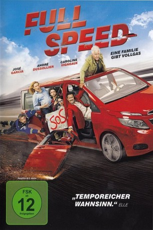

#10024 Full Speed
 
 IMDB-Wertung: 5.7 / 10
IMDB-Wertung: 5.7 / 10  Metascore: 0
Metascore: 0 
Um den leidigen Staus ein Schnippchen zu schlagen und sie so zu vermeiden, macht sich eine Familie in ihrem neuen Minivan bereits in den ganz frühen Morgenstunden auf in den Sommerurlaub. Auf der Autobahn schaltet Tom (José Garcia), der Vater, die automatische Geschwindigkeitsregelung ein und fährt dann konsequent 130 km/h. Doch als seine Tochter etwas vergessen hat und sie umdrehen wollen, muss er merken, dass die Elektronik kaputt ist. Er bekommt keinen Zugriff mehr auf die Steuerung des Wagens, ein Abbremsen scheint nicht möglich. Immer verrücktere Versuche unternehmen die sechs Insassen des Minivans, um das Gefährt zu verlangsamen. Keiner hat Erfolg. Schnell liegen die Nerven blank. Doch es kommt noch schlimmer: In weniger als 200 Kilometern wartet das Ende eines Monsterstaus....
Jahr: 2016
Dauer: 87 Minuten
FSK: 12
Land: Frankreich Studio: UFATonspuren:
Untertitel:
Auflösung: 1080p (1920x800) Größe: 3594 MB
Genre: Action, Komödie
Regisseur: Nicolas Benamou
Drehbuch: Frédéric Jardin, Fabrice Roger-Lacan, Fabrice Roger-Lacan, Nicolas Benamou
Soundtrack: Maxime Desprez, Michaël Tordjman
Darsteller:
 José Garcia als Tom
José Garcia als Tom André Dussollier als Ben
André Dussollier als Ben Philippe Laudenbach als Monsieur Château-Chantelle
Philippe Laudenbach als Monsieur Château-Chantelle Sissi Duparc als La mère chez le concessionnaire
Sissi Duparc als La mère chez le concessionnaire Florence Foresti als Capitaine Peton
Florence Foresti als Capitaine Peton- Caroline Vigneaux als Julia
- Charlotte Gabris als Melody
 Vincent Desagnat als Adjudant-chef Besauce
Vincent Desagnat als Adjudant-chef Besauce- Josephine Callies als Lison
- Stylane Lecaille als Noé
- Jérôme Commandeur als Danieli
- Ingrid Donnadieu als Gendarme Vignali
- Vladimir Houbart als Jacky
- Harrison Arevalo als Juan
- Béatrice Costantini als Madame Château-Chantelle
- Jérôme Lenôtre als Le père chez le concessionaire
- Mathieu Barbet als Le Planton
- Bernard Cherqui als Gendarme Ping-Pong
- Christian Hening als Super gendarme
- Anne Ferrier als Medusa
- Hortense Gélinet als Journaliste BFMTV
- Rachid M'Barki als Journaliste BFMTV plateau
- Béatrice Michel als La clocharde
- Louiza Arriouache als La gitane
- Amin Harfouch als Gitan
Datei: X:\2016(A-F)\Full Speed (2016, FSK12, 1920x800).mkv seit 20.11.2018
Festplatte: HD 2016(A-Z)
 Es gibt insgesamt 147 Filme in der Gruppe '2016(A-F)'
Es gibt insgesamt 147 Filme in der Gruppe '2016(A-F)'